Что приготовить из яиц
Омлеты, яичница, запеканки и выпечка, где яйца главные. 51 рецептов: у каждого время, калории и БЖУ на порцию, пошаговые инструкции и список покупок
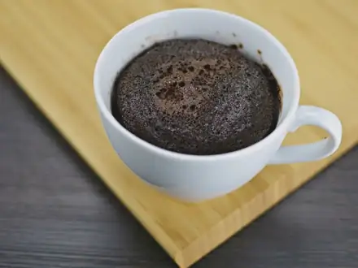
Шоколадный кекс в кружке в микроволновке7 мин · 506 ккал · Б 15 г · Десерт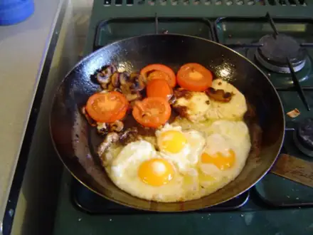
Яичница-глазунья с помидорами10 мин · 243 ккал · Б 15 г · Завтрак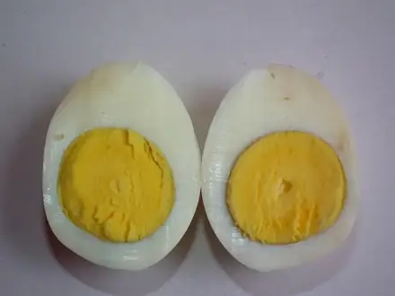
Яйца всмятку и в мешочек10 мин · 173 ккал · Б 14 г · Завтрак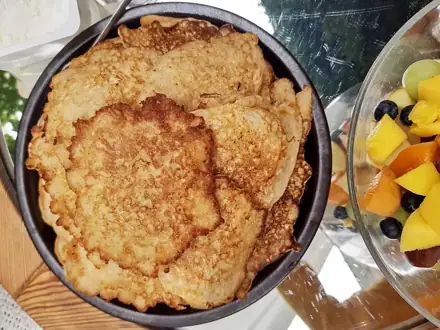
Овсяноблин15 мин · 339 ккал · Б 18 г · Завтрак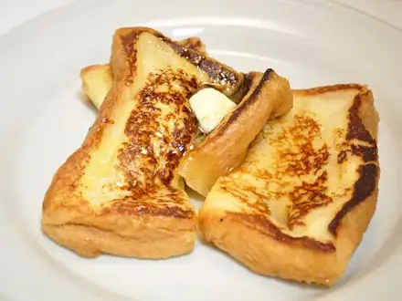
Гренки сладкие15 мин · 279 ккал · Б 9 г · Завтрак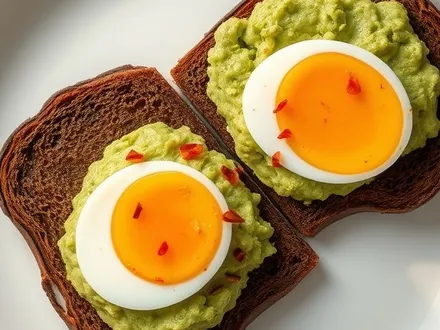
Бутерброды с авокадо и яйцом15 мин · 351 ккал · Б 13 г · Завтрак- Банановые панкейки из трёх продуктов15 мин · 294 ккал · Б 11 г · Завтрак
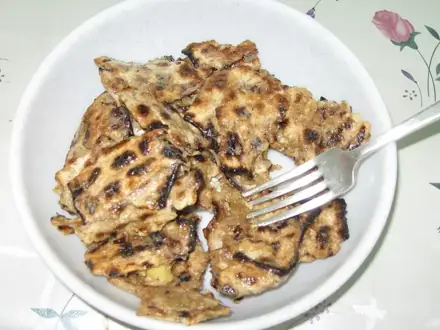
Мацебрай15 мин · 368 ккал · Б 15 г · Завтрак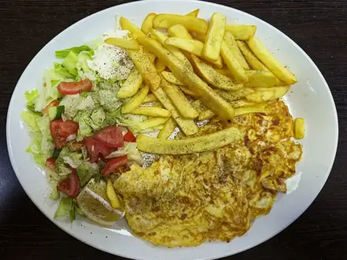
Омлет с курицей15 мин · 361 ккал · Б 34 г · Завтрак- Омлет с остатками овощей15 мин · 361 ккал · Б 18 г · Завтрак
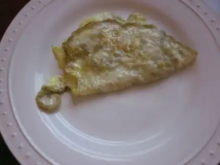
Омлет на пару20 мин · 223 ккал · Б 16 г · Завтрак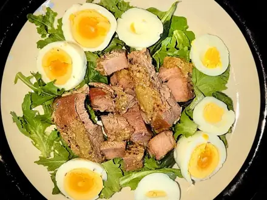
Салат с тунцом и яйцом20 мин · 258 ккал · Б 23 г · Салат- Жареный рис с яйцом и овощами20 мин · 532 ккал · Б 16 г · Второе блюдо
- Жареный рис с овощами по-домашнему20 мин · 401 ккал · Б 11 г · Второе блюдо
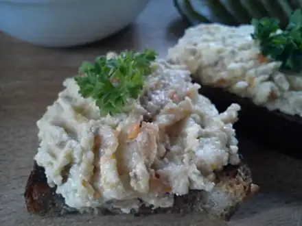
Форшмак из сельди25 мин · 234 ккал · Б 13 г · Закуска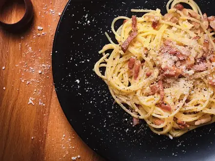
Спагетти карбонара25 мин · 962 ккал · Б 49 г · Второе блюдо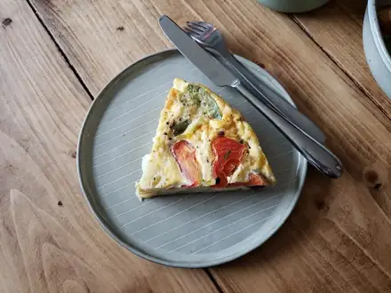
Сырный омлет-фриттата25 мин · 354 ккал · Б 24 г · Завтрак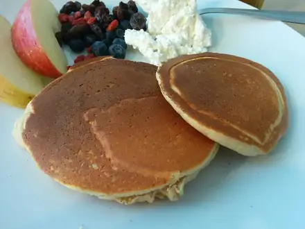
Протеиновые блины на твороге25 мин · 344 ккал · Б 29 г · Завтрак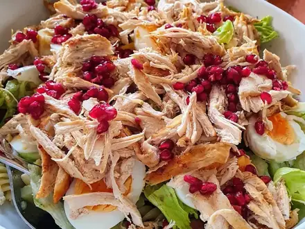
Салат из курицы из супа25 мин · 369 ккал · Б 31 г · Салат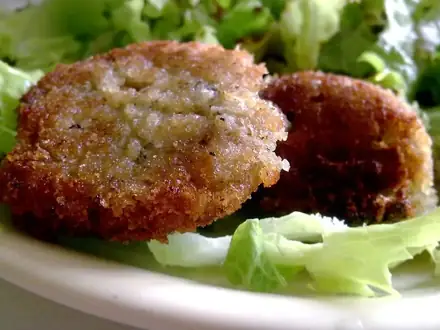
Оладьи из вчерашнего риса25 мин · 380 ккал · Б 10 г · Завтрак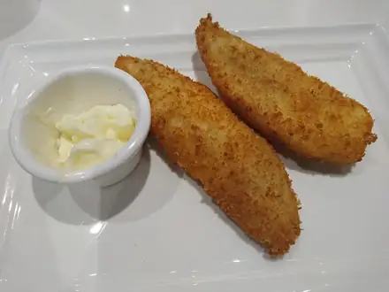
Минтай в кляре30 мин · 366 ккал · Б 30 г · Второе блюдо- Жареная рисовая лапша с креветками30 мин · 757 ккал · Б 41 г · Второе блюдо
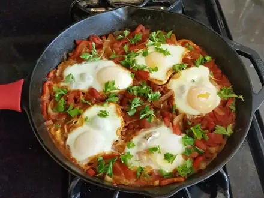
Шакшука35 мин · 361 ккал · Б 19 г · Завтрак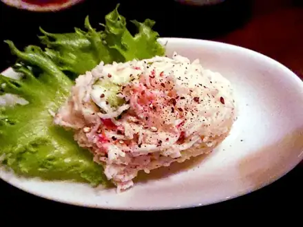
Крабовый салат35 мин · 345 ккал · Б 12 г · Салат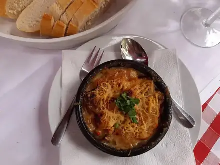
Запеканка из макарон с сыром и яйцом35 мин · 358 ккал · Б 19 г · Второе блюдо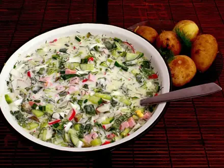
Окрошка на кефире40 мин · 309 ккал · Б 17 г · Суп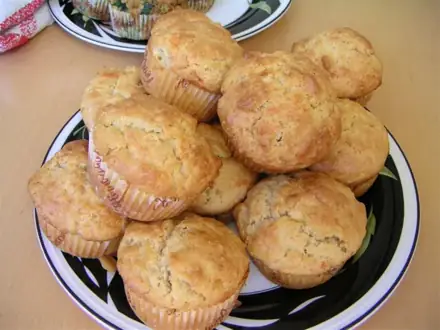
Творожные маффины40 мин · 236 ккал · Б 18 г · Выпечка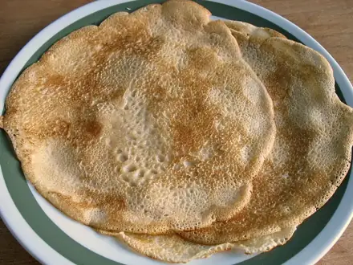
Блины на молоке45 мин · 379 ккал · Б 12 г · Завтрак Творожная запеканка без сахара для малышей50 мин · 237 ккал · Б 22 г · Завтрак
Творожная запеканка без сахара для малышей50 мин · 237 ккал · Б 22 г · Завтрак- Тонкие блины на кефире с дырочками50 мин · 433 ккал · Б 14 г · Завтрак
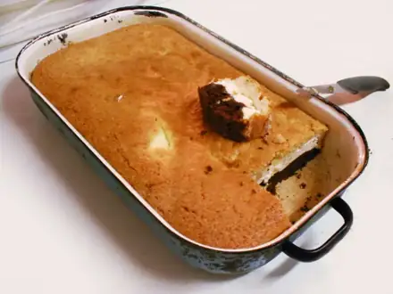
Творожная запеканка60 мин · 244 ккал · Б 18 г · Завтрак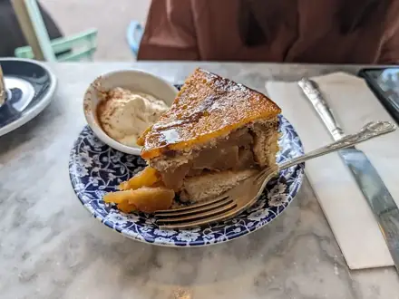
Шарлотка с яблоками60 мин · 251 ккал · Б 6 г · Выпечка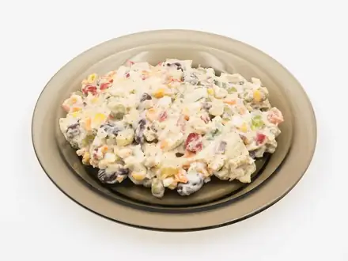
Оливье60 мин · 494 ккал · Б 16 г · Салат- Киш лорен60 мин · 631 ккал · Б 23 г · Выпечка
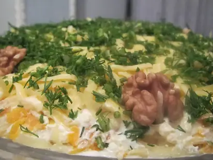
Салат Мимоза с сардинами60 мин · 455 ккал · Б 21 г · Салат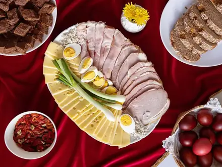
Крашеные яйца в луковой шелухе60 мин · 86 ккал · Б 7 г · Закуска- Блинчики с творогом60 мин · 547 ккал · Б 28 г · Завтрак
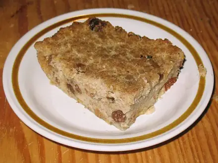
Хлебный пудинг60 мин · 474 ккал · Б 15 г · Десерт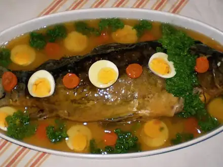
Гефилте фиш (рыбные котлеты в бульоне)70 мин · 249 ккал · Б 34 г · Второе блюдо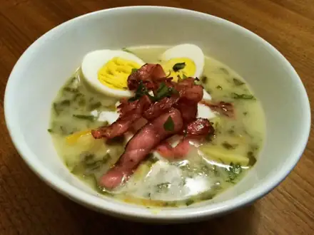
Зелёный борщ со шпинатом80 мин · 349 ккал · Б 27 г · Суп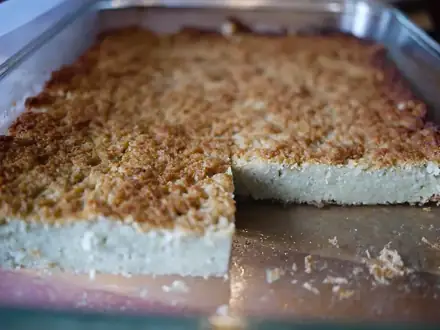
Кугель картофельный80 мин · 290 ккал · Б 7 г · Гарнир- Блинчики с мясом80 мин · 688 ккал · Б 28 г · Второе блюдо
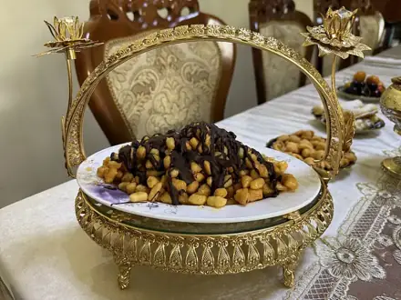
Чак-чак90 мин · 390 ккал · Б 8 г · Десерт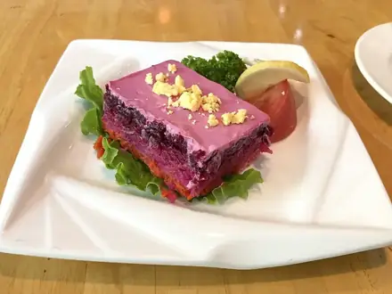
Селёдка под шубой100 мин · 437 ккал · Б 16 г · Салат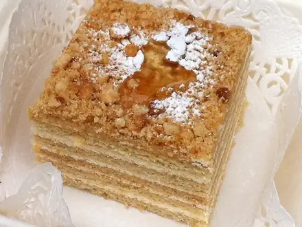
Медовик упрощённый120 мин · 485 ккал · Б 8 г · Десерт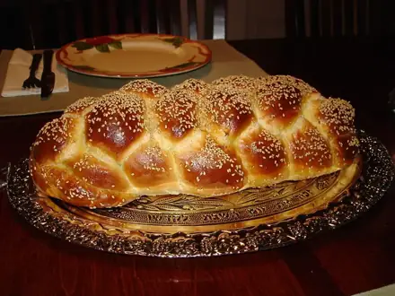
Хала180 мин · 270 ккал · Б 8 г · Выпечка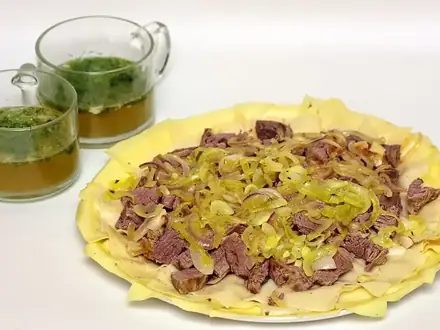
Бешбармак210 мин · 796 ккал · Б 49 г · Второе блюдо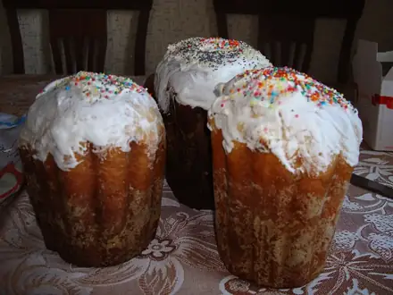
Кулич пасхальный300 мин · 432 ккал · Б 9 г · Выпечка- Яичные маффины с овощами30 мин · 273 ккал · Б 20 г · Завтрак
- Рисовая запеканка с яблоком75 мин · 280 ккал · Б 8 г · Десерт
- Мачанка с блинами90 мин · 977 ккал · Б 38 г · Второе блюдо
Другие подборки
- Что приготовить из курицы
- Что приготовить из фарша
- Что приготовить из мяса
- Что приготовить из рыбы
- Что приготовить из картошки
- Что приготовить из творога
- Что приготовить из кабачков
- Что приготовить из капусты
- Что приготовить из грибов
- Что приготовить из риса
- Что приготовить из макарон
- Что приготовить из гречки
- Быстрый ужин за 30 минут
- Быстрый завтрак за 20 минут
- Что приготовить на скорую руку
- ПП-рецепты: лёгкие блюда до 400 ккал
- Белковые блюда: от 25 г белка на порцию
- Дешёвые рецепты из простых продуктов
- Что приготовить ребёнку
- Постные блюда
- Блюда на пару
- Что приготовить в духовке
- Простые супы
- Простые салаты
- Выпечка и десерты
- Блюда на праздничный стол
- Что приготовить из остатков